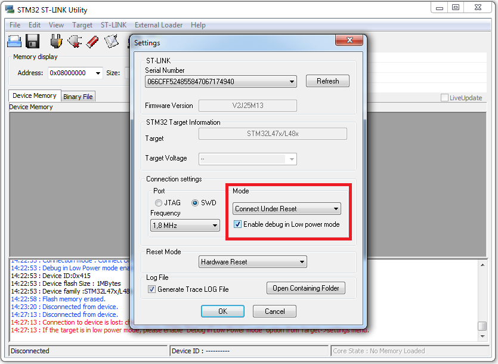

- Difference between STM32L1 and STM32L4
- Simplified summary:
- STM32L1 has ARM Cortex-M3
- STM32L4 has ARM Cortex-M4F
- Cortex-M4F = Cortex-M3 + DSP + FPU
- Application note: Migrating from STM32L1 series to STM32L4 series microcontrollers (local copy)
- An incomplete comparison between STM32L1 and STM32L4
- Should I choose STM32L1 or STM32L4 Discovery Kit?
- STM32L4 Kit is slightly more expensive. (STM32L4 costs ~$20, STM32L1 costs ~$12).
- If you have to use FPU and DSP, choose STM32L4.
- If you need more I/O pins, choose STM32L4.
- If you have to use touch sensensing, choose STM32L1.
- If you have to use codec and microphone, choose STM32L4 becaue it has on-board mic, CODEC, and earphone jack.
- The book focuses on STM32L1 and STM32L4. All lab descriptions on this website have both versions. The STM32L4 lab descriptions highlight special attentions not presented in the book.
- If you do not know which one to use, I recommend STM32L4.
- Which tool-chain/development environment should we use?
- There are both free and commercial tool-chains for STM32 Cortex-M family.
- Two most popular commercial tool-chains are IAR for Cortex-M and Keil. Both are only available on Windows platforms. Both offers an evaluation version, which limits the code size to 32 KB.
- Free tool-chains include CooCox and System Workbench for STM32 (OpenSTM32) . They are based on GCC and Eclipse. CooCox supports only Windows. OpenSTM32 supports Windows, Linux, and MacOS. They have no limitations on the code size.
- I strongly recommend Keil. Here are the reasons.
- The free evaluation version works great. The code-size limiation is not a problem for us at all. The code size of our lab and homework never exceeds 32 KB.
- For Linux and Mac machnes, Keil can work perfectly on a Windows virtual machine.
- Keil offers many features that free tool-chains do not have. Most importantly, Keil allows us to view the values of Cortex-M registers and all periperiperal components registers in real-time.
-
- Why do we program at the register level, instead of using ST/ARM API library?
- I strongly discrouage students to use any pre-made libraries provided by ST or ARM, such as ARM CMSIS, and STM32Cube HAL (Hardware Abstraction Layer) and LL (Low Layer) APIs.
- Directly controlling, monitoring, and accessing on-chip registers is the best way to learn firmware development.
- The libraries provided by ST or ARM hide too much details about what's under the hood. Students using provided libraries can get a lab to work, but they often do not know what the code did.
- Why is the data memory uninitialized?
- If your main function is written in assembly and you use the default startup_stm32l476xx.s, you will find that your data memory is not initialized when the program runs.
- Solution: use my modified startup_stm32l476xx.s. The modified code starts the RW data segments and the ZI segments from flash to RAM.
- Firmware Upgrade
- When you download the binary code to the STM32 Discover Kit, sometimes it pops up a window and asks you "old ST-Link firmware detected. Do you want to upgrade it?" Select “Yes” and click “Device Connect.”
- If it gives you the error message "ST-Link is not in the DFU mode," unplug the USB cable from the kit, and then reconnect it, and try “Device Connect” again.
- If the connection is successful, click “YES” to upgrade the firmware.
- Solving "Target not found" error
- When you use the STM32L4 board at the very first time (STM32L1 has no such issue), you might not be able to program it in Keil and receive an error of "Target not found" when you download the code to the board. This is because the demo program quickly puts the microprocessor into a very low power mode after a reset. There are several ways to solve it. Below are two simplest ways. The error will go away permanently.
- Method 1: In Keil, click the icon "Options for Target", follow "Debug" and then "Settings", and change the connect from "normal" to "with pre-reset" in the dialog popped.
- Method 2:
Replace the demo program with one that does not put processor to low power mode
- Download DISCO_L476VG_leds_buttons_DISCO_L476VG.bin
- Copy it to the STM32L USB drive. When you plug the STM32L4 board to the computer, it is mounted as a USB drive named "DIS_L476VG".
- Push the "reset" button and reboot the board.
- If this problem comes back, follow the following different methods to see whether this can solve your problem
- Make sure all jumpers are correctly connected.
- Use the STM32 ST-Link Utility to erase chip. Hold down the reset button before the USB cable is plugged in. When the reset button is released, immediately select "Target -> Erase Chip" in ST-Link Utility. Several attempts might be needed to get the timing correctly.
- Re-install USB drive
- "No ST-Link detected" error
- First, make sure that the device driver is corrected installed. If not sure, re-install the USB device driver: go to the directory C:\Keil_v5\ARM\STLink\USBDriver and run stlink_winusb_install.bat
- On STM32L4, the alternative function of pin PA.13 and PA.14 should be ST-Link SWDIO and SWCLK, respectively. If you code accidently changes the mode or the alternative function of these two pins, you can no longer program the STM3L4 kit anymore.
- Solution: Install ST-Link Utitity and follow the following steps to erase your bad code stored on the board.
- Step 1: Open ST-Link Utility, click menu "Target" , click "Settings"
- Step 2: Select "Connect Under Set" as the connection mode

- Step 3: Click "Target" and "Connect", and then click "Target" and "Erase Chip"!
- Step 4: Click "Target" and "Disconnect"
- Error: Flash Download failed
- When you program the board, the following error might show up
- Solution:
- Step 1: Click the icon "Options for Targets", go to the Debug page, click "Settings"
- Step 2: Go to the "Flash Download" page and make sure "STM32L4xx 1MB Flash" is present. If not, add it.

- ST-Link connection error
- When you program the board, Keil might report "ST-Link connection error"
- Solution: Make sure that your board is not connected by any other software. For example, your ST-Link Utility is not connecting to your board. No other Keil is debugging the board.
- "No target connected"
- When you program the board, Keil might report "No target connected".
- Solution: (1) Make sure the USB cable is well connected. (2) Make sure that all jumpers on the board are on the correct positions. See the user manual "Discovery kit with STM32L476VG MCU" for the settings of jumpers.
- Warning: L6314W: No section matches pattern *(InRoot$$Sections)
- When you compile your assembly project, you will receive an warning message of L6314W. This warning is genearted because my startup_xxx.s file directly calls the __main subroutine. You can ignore this warning message, or suppress it by following these steps: (1) click "options for target" icon, (2) go the Linker page, (3) add "--diag_suppress=L6314W" to the Misc controls box.
- Boot from RAM, instead of Flash
- Error: L6218E: Undefined symbol Image$$ER_IROM1$$RO$$Base (referred from startup_stm32l476xx.o)
When you build a new project from the beginning without using my templates, you might have the following error if you use my modified startup_stm32l476xx.s:
.\Objects\test.axf: Error: L6218E: Undefined symbol Image$$ER_IROM1$$RO$$Base (referred from startup_stm32l476xx.o).
.\Objects\test.axf: Error: L6218E: Undefined symbol Image$$ER_IROM1$$RO$$Length (referred from startup_stm32l476xx.o).
.\Objects\test.axf: Error: L6218E: Undefined symbol Image$$ER_IROM1$$RO$$Limit (referred from startup_stm32l476xx.o).
.\Objects\test.axf: Error: L6218E: Undefined symbol Image$$ER_IROM1$$RW$$Base (referred from startup_stm32l476xx.o).
.\Objects\test.axf: Error: L6218E: Undefined symbol Image$$ER_IROM1$$RW$$Length (referred from startup_stm32l476xx.o).
.\Objects\test.axf: Error: L6218E: Undefined symbol Image$$ER_IROM1$$RW$$Limit (referred from startup_stm32l476xx.o).
.\Objects\test.axf: Error: L6218E: Undefined symbol Image$$ER_IROM1$$ZI$$Base (referred from startup_stm32l476xx.o).
.\Objects\test.axf: Error: L6218E: Undefined symbol Image$$ER_IROM1$$ZI$$Length (referred from startup_stm32l476xx.o).
.\Objects\test.axf: Error: L6218E: Undefined symbol Image$$ER_IROM1$$ZI$$Limit (referred from startup_stm32l476xx.o).
.\Objects\test.axf: Error: L6218E: Undefined symbol Image$$RW_IRAM1$$Base (referred from startup_stm32l476xx.o).
.\Objects\test.axf: Error: L6218E: Undefined symbol Image$$RW_IRAM1$$Length (referred from startup_stm32l476xx.o).
.\Objects\test.axf: Error: L6218E: Undefined symbol Image$$RW_IRAM1$$Limit (referred from startup_stm32l476xx.o).
.\Objects\test.axf: Error: L6218E: Undefined symbol Image$$RW_IRAM1$$RO$$Base (referred from startup_stm32l476xx.o).
.\Objects\test.axf: Error: L6218E: Undefined symbol Image$$RW_IRAM1$$RO$$Length (referred from startup_stm32l476xx.o).
.\Objects\test.axf: Error: L6218E: Undefined symbol Image$$RW_IRAM1$$RW$$Base (referred from startup_stm32l476xx.o).
.\Objects\test.axf: Error: L6218E: Undefined symbol Image$$RW_IRAM1$$RW$$Length (referred from startup_stm32l476xx.o).
.\Objects\test.axf: Error: L6218E: Undefined symbol Image$$RW_IRAM1$$RW$$Limit (referred from startup_stm32l476xx.o).
.\Objects\test.axf: Error: L6218E: Undefined symbol Image$$RW_IRAM1$$ZI$$Base (referred from startup_stm32l476xx.o).
.\Objects\test.axf: Error: L6218E: Undefined symbol Image$$RW_IRAM1$$ZI$$Length (referred from startup_stm32l476xx.o).
.\Objects\test.axf: Error: L6218E: Undefined symbol Image$$RW_IRAM1$$ZI$$Limit (referred from startup_stm32l476xx.o).
.\Objects\test.axf: Error: L6218E: Undefined symbol Load$$ER_IROM1$$Base (referred from startup_stm32l476xx.o).
.\Objects\test.axf: Error: L6218E: Undefined symbol Load$$RW_IRAM1$$Base (referred from startup_stm32l476xx.o).
Solution: Click "Options for Target" icon, and go the Linker page, and select "Use Memory Layout from Target Dialog", as shown below
- Error: L6238E: Invalid call from '~PRES8' function to 'REQ8' function
- By default, a function implemented in assembly does not require code to preserve 8-byte alignment for stack allocation.
- However, a C function does require that.
- Therefore, when an assembly function calls a C function, the error L6238E occurs if the assembly function uses push or pop function.
Solution: At the beginning of the assembly file, you can add the PRESERVE8 directive to ensure that the stack is aligned with eight-byte boundary. For example:
PRESERVE8
...
AREA myAssembly, CODE, READONLY
|